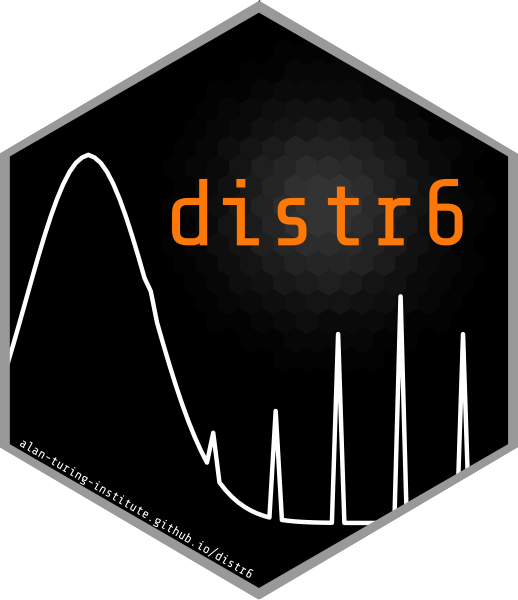

What is distr6?
distr6 is a unified and clean interface to organise the probability distributions implemented in R into one R6 object oriented package, as well as adding distributions yet to implemented in R, currently we have 42 probability distributions as well as 11 kernels. Building the package from the ground up and making use of tried and tested design patterns (as per Gamma et al. 1994), distr6 aims to make probability distributions easy to use, understand and analyse.
distr6 extends the work of Peter Ruckdeschel, Matthias Kohl et al. who created the first object-oriented (OO) interface for distributions using S4. Their distr package is currently the gold-standard in R for OO distribution handling. Using R6 we aim to take this even further and to create a scalable interface that can continue to grow with the community. Full details of the API and class structure can be seen in the distr6 website.
Main Features
distr6 is not intended to replace the base R distributions function but instead to give an alternative that focuses on distributions as objects that can be manipulated and accessed as required. The main features therefore centre on OOP practices, design patterns and API design. Of particular note:
All distributions in base R introduced as objects with methods for common statistical functions including pdf, cdf, inverse cdf, simulation, mean, variance, skewness and kurtosis
B <- Binomial$new(prob = 0.5, size = 10)
B$pdf(1:10)
#> [1] 0.0097656250 0.0439453125 0.1171875000 0.2050781250 0.2460937500
#> [6] 0.2050781250 0.1171875000 0.0439453125 0.0097656250 0.0009765625
B$kurtosis()
#> [1] -0.2
B$rand(5)
#> [1] 7 7 4 7 6
summary(B)
#> Binomial Probability Distribution.
#> Parameterised with:
#>
#> Id Support Value Tags
#> 1: prob [0,1] 0.5 linked,required
#> 2: qprob [0,1] linked,required
#> 3: size ℕ+ 10 required
#>
#>
#> Quick Statistics
#> Mean: 5
#> Variance: 2.5
#> Skewness: 0
#> Ex. Kurtosis: -0.2
#>
#> Support: {0, 1,...,9, 10} Scientific Type: ℕ0
#>
#> Traits: discrete; univariate
#> Properties: symmetric; platykurtic; no skewFlexible construction of distributions for common parameterisations
Exponential$new(rate = 2)
#> Exp(rate = 2)
Exponential$new(scale = 2)
#> Exp(scale = 2)
Normal$new(mean = 0, prec = 2)
#> Norm(mean = 0, prec = 2)
Normal$new(mean = 0, sd = 3)$parameters()
#> Id Support Value Tags
#> 1: mean ℝ 0 required
#> 2: prec ℝ+ linked,required
#> 3: sd ℝ+ 3 linked,required
#> 4: var ℝ+ linked,requiredDecorators for extending functionality of distributions to more complex modelling methods
B <- Binomial$new()
decorate(B, "ExoticStatistics")
#> Binomial is now decorated with ExoticStatistics
#> Binom(prob = 0.5, size = 10)
B$survival(2)
#> [1] 0.9453125
decorate(B, "CoreStatistics")
#> Binomial is now decorated with CoreStatistics
#> Binom(prob = 0.5, size = 10)
B$kthmoment(6)
#> Results from numeric calculations are approximate only. Better results may be available.
#> [1] 190Wrappers including truncation, huberization and product distributions for manipulation and composition of distributions.
B <- Binomial$new()
TruncatedDistribution$new(B, lower = 2, upper = 5) #Or: truncate(B,2,5)
#> TruncBinom(Binom__prob = 0.5, Binom__size = 10, trunc__lower = 2, trunc__upper = 5)
N <- Normal$new()
MixtureDistribution$new(list(B,N), weights = c(0.1, 0.9))
#> Binom wX Norm
ProductDistribution$new(list(B,N))
#> Binom X NormAdditionally set6 is used for symbolic representation of sets for Distribution typing
Usage
distr6 has three primary use-cases:
- Upgrading base Extend the R distributions functions to classes so that each distribution additionally has basic statistical methods including expectation and variance and properties/traits including discrete/continuous, univariate/multivariate, etc.
- Statistics Implementing decorators and adaptors to manipulate distributions including distribution composition. Additionally functionality for numeric calculations based on any arbitrary distribution.
- Modelling Probabilistic modelling using distr6 objects as the modelling targets. Objects as targets is an understood ML paradigm and introducing distributions as classes is the first step to implementing probabilistic modelling.
Installation
distr6 can be installed from R-Universe
# Enable repository from raphaels1
options(repos = c(
raphaels1 = 'https://raphaels1.r-universe.dev',
CRAN = 'https://cloud.r-project.org'))
# Download and install distr6 in R
install.packages('distr6')And GitHub
remotes::install_github("alan-turing-institute/distr6")distr6 will not be on CRAN for the forseeable future.
Future Plans
Our plans for the next update include
- A generalised
qqplotfor comparing any distributions - A finalised
FunctionImputationdecorator with different imputation strategies - Discrete distribution subtraction (negative convolution)
- A wrapper for scaling distributions to a given mean and variance
- More probability distributions
- Any other good suggestions made between now and then!
Package Development and Contributing
distr6 is released under the MIT licence with acknowledgements to the LGPL-3 licence of distr. Therefore any contributions to distr6 will also be accepted under the MIT licence. We welcome all bug reports, issues, questions and suggestions which can be raised here but please read through our contributing guidelines for details including our code of conduct.
Acknowledgements
distr6 is the result of a collaboration between many people, universities and institutions across the world, without whom the speed and performance of the package would not be up to the standard it is. Firstly we acknowledge all the work of Prof. Dr. Peter Ruckdeschel and Prof. Dr. Matthias Kohl in developing the original distr family of packages. Secondly their significant contributions to the planning and design of distr6 including the distribution and probability family class structures. A team of undergraduates at University College London implemented many of the probability distributions and designed the plotting interface. The team consists of Shen Chen (@ShenSeanChen), Jordan Deenichin (@jdeenichin), Chengyang Gao (@garoc371), Chloe Zhaoyuan Gu (@gzy823), Yunjie He (@RoyaHe), Xiaowen Huang (@w090613), Shuhan Liu (@shliu99), Runlong Yu (@Edwinyrl), Chijing Zeng (@britneyzeng) and Qian Zhou (@yumizhou47). We also want to thank Prof. Dr. Bernd Bischl for discussions about design choices and useful features, particularly advice on the ParameterSet class. Finally University College London and The Alan Turing Institute for hosting workshops, meetings and providing coffee whenever needed.